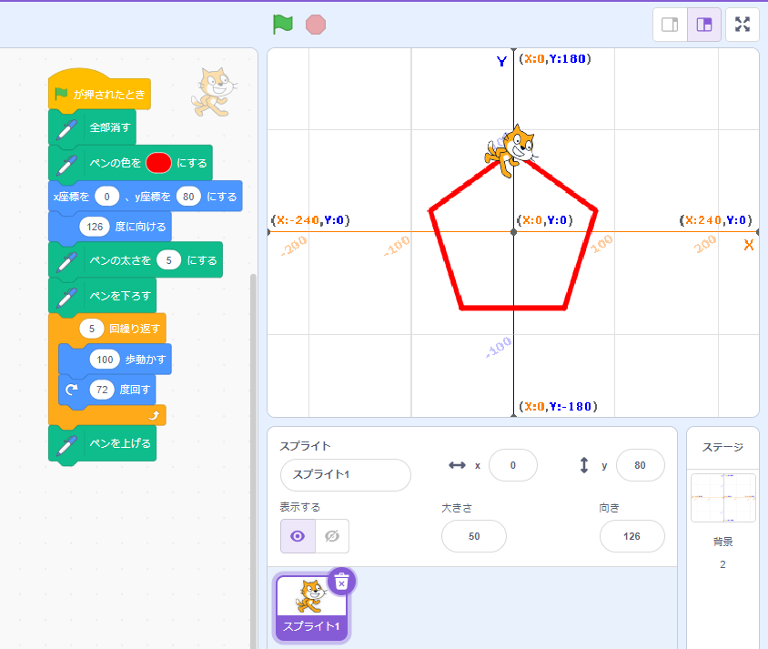
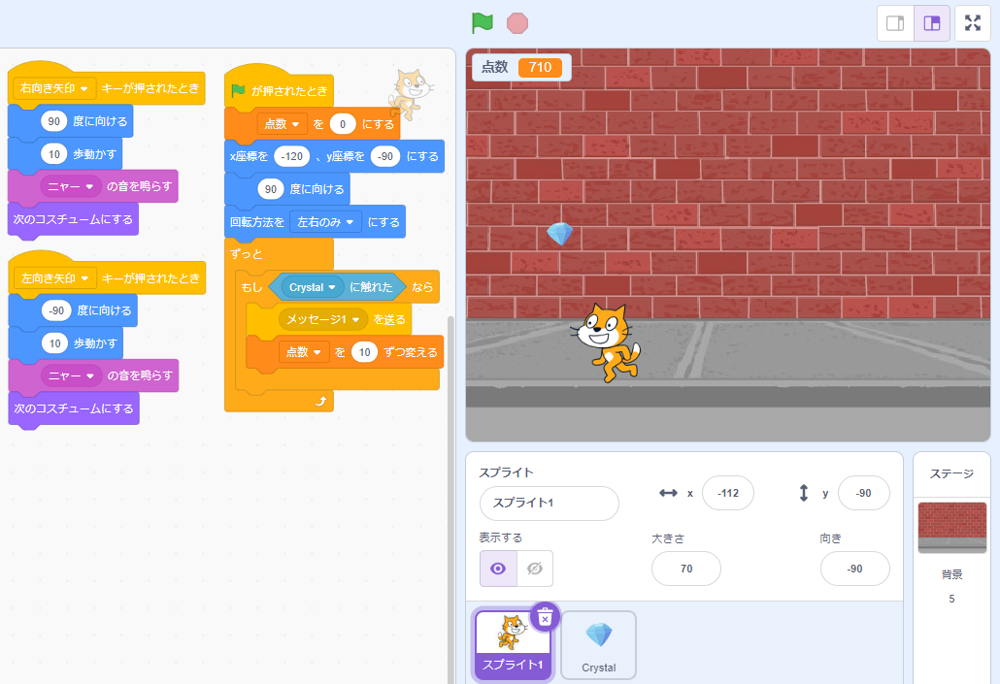
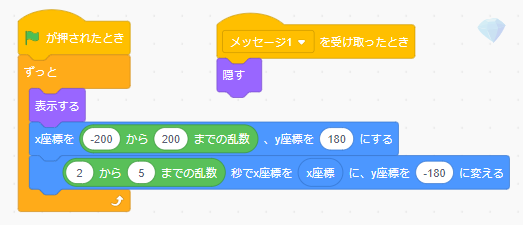

1週目のレポート ： 公大高専１年実習I-1
3b班29番 HusqZ
第1週目
1-1 サイエンスアート

1.内容
スクラッチを使って正五角形の線を書くプログラムを作成した。
2.感想
紙に分度器を使って五角形をかくときは内角を意識するが、プログラムで「○○°回転して進む」
としたいときは外角を使うことに気づいた。
1-2 ゲーム


1.内容
上から流れるクリスタルをネコのようなイヌのようなキツネのような生き物にキャッチさせるゲームを作成した。
生き物側とクリスタル側のプログラムを示す。
2.感想
この生き物のコスチュームを変えると歩く動きができることを初めて知って、愛着が湧いた。
1-3 ホームページ作成
ホームページ
1.内容
内容はすべてフィクション。
2.感想
初めてGitHubに触れたものだから仕組みが知れた。
レポート2
レポート3